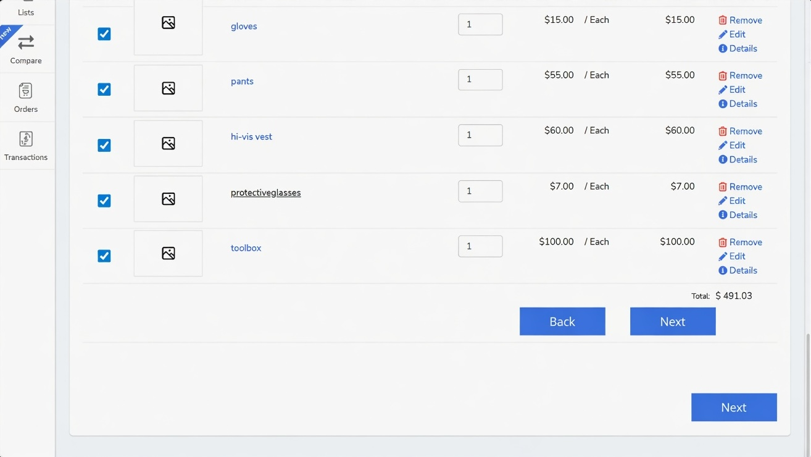
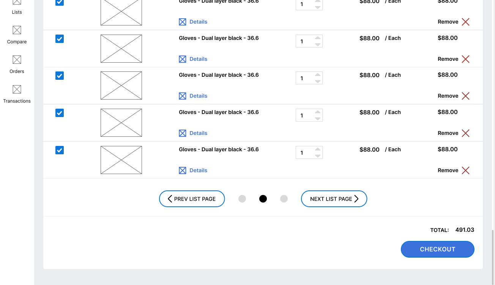
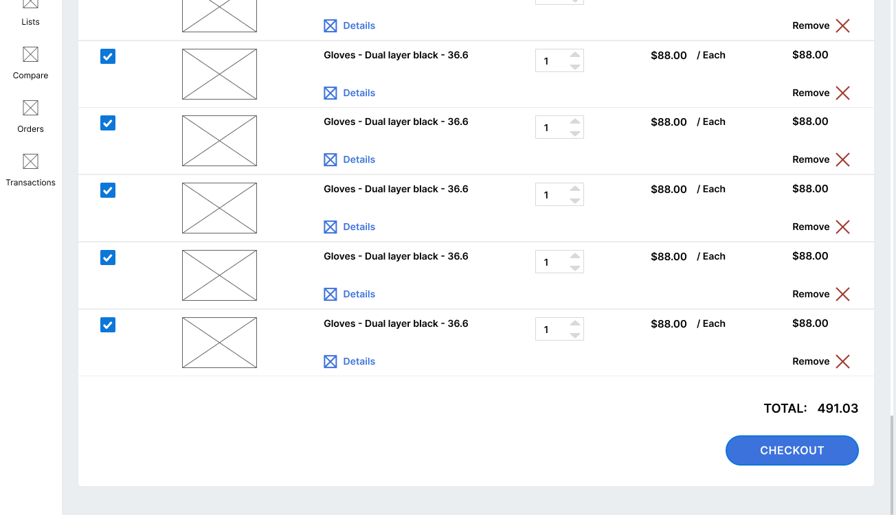

Case Study · Unimarket · 2018–2019
Unimarket is enterprise procurement software — the platform large organisations use to commit and approve spend. Buyers kept abandoning the cart at the final step and calling the checkout broken. The checkout worked fine. The interface was hiding which button actually placed the order.
The situation
Unimarket is a large, scalable procurement system, first built around 15 years before I joined the order-placement work. The customer success team was fielding a steady stream of the same complaint: the checkout doesn't work. Orders weren't completing.
In a procurement platform, an order that won't place isn't a cosmetic annoyance. It's committed spend that never lands — a buyer who escalates to support instead of finishing the transaction. The same failure mode any checkout or money-movement flow lives in fear of.
Engineering had checked the checkout end to end. Technically, it submitted fine. So the problem was living somewhere between the screen and the user — exactly where a designer is supposed to go looking.
Investigation
I sat with the customer success team, pulled the order data, and looked for the pattern in who got stuck and who didn't. It split cleanly on one variable: cart size.
Buyers submitted their orders without trouble. No complaints.
of buyers got stuck before the order was ever placed.
Something about larger carts was breaking the path to checkout — and larger carts are exactly the high-value orders you least want to lose.
The problem
Over 10 items, the cart paginated. Each page got a primary "Next" and "Back" to move between pages. The button that actually placed the order was styled the same way — as a primary "Next".
So at the bottom of a long cart, a buyer faced two or three identical buttons all saying "Next". One advanced the page. One committed the order. Nothing told them apart. Most people clicked through pages expecting to reach checkout, looped, and concluded the checkout was broken.

The bug wasn't in the code. It was that the most important action on the page — the one that completes the transaction — looked exactly like the least important one.
The solution
The software team worked in tight agile cycles. A structural change to a 15-year-old checkout needed planning and regression testing across browsers — time we didn't have while buyers were actively bouncing. So I split the fix into two moves: a safe one that could ship immediately, and the proper one that followed.
Milestone 1 · The band-aid
For the first pass I was deliberately constrained to styles and wording — no layout or structure changes. That was enough to remove the ambiguity:

Final solution · Remove the maze
With the pressure off, we asked why the cart paginated at all. It turned out to be a constraint inherited from older technology, not a current one. The cart already capped at 1,000 items, so we tested a single long list at that limit:

The result
The customer success team never received another complaint of this nature again. No new feature, no rebuild — a wording-and-hierarchy fix first, then the discipline to delete a pattern that no longer earned its place.
Lessons
Before rebuilding anything, I changed two words and one button style — and that alone recovered most of the lost orders. Reach for wording and hierarchy before architecture.
The pagination existed because of a technical limitation that had quietly expired years earlier. In legacy financial and procurement systems especially, much of the friction is old constraints that no longer apply — worth re-testing before you design around them.
Working in agile let me validate the hypothesis with a low-risk change in days, prove it moved the number, and earn the room to do the structural work properly. Quick iteration de-risks the bigger bet.